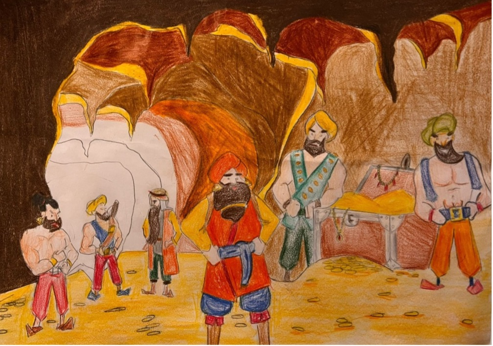

Ben, Kam Püre Big’in oğlu Bamsı Beyrek. İç Oğuz’un yüzü nikaplı (zırhlı) dört yiğidinden biriyim. Salur Kazan’ın müşaviri ve güvenilir adamı… Ağzı dualı Oğuz beylerinin duasıyla dünyaya geldim, daha dünyaya gelmeden Pay Piçen Big’in henüz doğmamış kızı Banu Çiçek’le beşik kertmesi yapılmışım. İlk kahramanlığımı, on beş yaşında kâfir tarafından yağmalanan babamın bezirgânlarını kurtararak sergiledim. Bu kahramanlığım üzerine babam Kam Püre Big, bir toy verip Dedem Korkut’u da çağırttı. Gelen Dedem Korkut, adımı boy boylayıp soy soylayarak Bamsı Beyrek koydu. Dede Korkut Kitabı’nın merkezinde yer aldığım anlatmasında beşik kertmem olan Banu Çiçek’le ilk kahramanlığımdan sonra karşılaştım. Kendisini dadı olarak tanıtan Banu Çiçek’le at yarışı, ok atma yarışı ve güreş yaptım. İlk ikisini kazandım fakat güreşte çok zorlandım. Güreş sırasında Banu Çiçek olduğunu bilmediğim “dadı”yı hile ile yendim. Bunu fırsat bilip belini kavrayıp yere vurdum. Banu Çiçek kendisini tanıtınca parmağına nişan yüzüğünü taktım. Babama, tıpkı Kan Turalı’nın istediği gibi, alp ya da savaşçı bir kadınla evlenmek istediğimi söyledim. Bunun üzerine kardeşi Deli Karçar’dan Banu Çiçek’i istemesi için Dedem Korkut’u göndermeye kadar verdiler. Deli Karçar, kız kardeşini istemeye gelen bütün yiğitleri öldürmüştü. Kız istemek için giden Dedem Korkut’u da öldürmek ister fakat Dedem Korkut dua edip kılıç kaldıran elini kurutur. Deli Karçar, elini kurtarmak için kız kardeşini vermeye razı olur. Banu Çiçek’le evlendiğim gün Pay Piçen Big’in kızını vermeyi vadettiği Bayburt Hisarı’nın beyi tarafından tutsak edildim. İç Oğuz’dan Yalançı oğlu Yaltacuk, daha önce kendisine verdiğim gömleği kana bulayarak benim öldüğüm haberini Oğuz ülkesine götürdü. Tutsaklıkta tam on altı yıl kaldım. Bu arada adaklım Banu Çiçek’i Yalançı oğlu Yaltacuk’a vermişler. Düğün toyun olduğu gün Bayburt Hisarı’nın beyinin kızının yardımıyla tutsaklıktan kurtulup Oğuz ülkesine geldim. Bir deli ozan kılığında adaklımın düğününe gelerek Oğuz beyleriyle Banu Çiçek’e kendimi tanıttım. Yalançı oğlu Yaltaçuk’u bağışladım, ardından da Oğuz beyleriyle birlikte tutsak kaldığım hisara saldırıp adamlarımı kurtardım. Adamlarım ve Bayburt Hisarı komutanının kızıyla birlikte Oğuz ülkesine geri döndüm. Büyük bir toy yaparak Banu Çiçek’le evlendim. Dede Korkut Kitabı’nın Dış Oğuz’un İç Oğuz’a asi oluşunu anlatan hikâyesinde, Dış Oğuz’dan evli olduğum için Aruz Koca benim de Salur Kazan’a asi olmamı istedi. Reddedince Aruz Koca tarafından kılıçlandım, sağ uyluğumdan yaralandım. Ağır yaralı olarak evime getirildim, kırk yiğidimi Salur Kazan’a göndererek öcümü almasını istedim. Ağır yaramdan dolayı iyileşemeyip öldüm.
